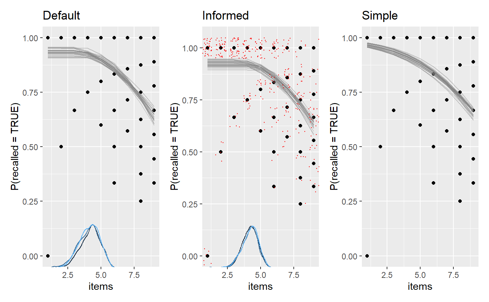

comparison.RmdThere are three main ways of doing model comparison in mcp:
mcp models using leave-One-Out cross validation (LOO-CV). Check out loo(fit), loo::loo_compare(fit1$loo, fit2$loo, ...), and loo::loo_model_weights(fit1$loo, fit2$loo, ...).hypothesis(fit, cp_1 > 40) or hypothesis(fit, cp_1 > 40 & x_2 > x_1).hypothesis(fit, cp_1 = 50) or hypothesis(fit, x_2 = x_1).We know quite a bit about human short term memory. Namely, the average human has almost perfect recall when presented with 1-4 items (we remember them all), and then errors begins intruding when presented with more items (Cowan, 2001). We also know that memory is not infinite, so as \(N \rightarrow \infty\), it has to plateau.
In other words, on “easy” trials with \(N <= capacity\) items to be recalled, we expect a constant high binomial rate. When \(N > capacity\), the rate declines. We specify a prior reflecting our a priori knowledge.
model = list(
recalled | trials(items) ~ 1,
~ 0 + items
)
prior = list(
int_1 = "dnorm(2, 1)", # high recall for easy trials
cp_1 = "dnorm(4, 1)", # performance dicontinuity around 4
items_2 = "dnorm(-0.4, 1) T( , -0.2)" # performance deteriorates considerably
)
# A very simple model
model_simple = list(recalled | trials(items) ~ 1 + items)Notice that items is used both as trials and x-axis. No problem.
Simulate some data using fit$simulate():
library(mcp)
options(mc.cores = 3) # Speed up sampling!
empty = mcp(model, family = binomial(), sample = FALSE)
set.seed(42)
df = data.frame(items = rep(1:9, each = 40))
df$recalled = empty$simulate(
df$items,
cp_1 = 4,
int_1 = 2.5,
items_2 = -0.4,
sigma = 0.5)Now fit it with and without the informative prior. We set iter fairly high because this model is not sampled effectively. We will also add sample = "both" to sample both prior and posterior. We will need both to compute point Bayes Factors using hypothesis() later.
fit_default = mcp(model, data = df, family = binomial(), sample = "both", iter = 10000)
fit_info = mcp(model, data = df, prior = prior, family = binomial(), sample = "both", iter = 10000)
fit_simple = mcp(model_simple, data = df, family = binomial(), sample = "both", iter = 10000)We plot them and add a few ggplot2 layers. We jitter the raw data in the middle plot, just to give a sense of the densities.
library(patchwork)
library(ggplot2)
plot(fit_default) +
ggtitle("Default") +
plot(fit_info) +
ggtitle("Informed") +
geom_jitter(height = 0.05, color = "red", size = 0.2) +
plot(fit_simple) +
ggtitle("Simple")## Warning in regularize.values(x, y, ties, missing(ties)): collapsing to unique
## 'x' values
## Warning in regularize.values(x, y, ties, missing(ties)): collapsing to unique
## 'x' values
## Warning in regularize.values(x, y, ties, missing(ties)): collapsing to unique
## 'x' values
You can compute probabilities and Bayes Factors for various hypotheses using hypothesis(). For example, let’s test the idea that the change point in recall occurs at four items:
## hypothesis mean lower upper p BF
## 1 cp_1 - 4 = 0 0.144693 -1.454185 1.630162 0.7782485 3.509552Let’s unpack:
hypothesis: For internal convenience, hypothesis always re-arranges to test against zero.mean: When subtracting \(4\), the posterior distribution is very close, but somewhat dispersed.lower and uppwer: The interval width defaults to 95% highest density interval, but you can change it using hypothesis(..., width = 0.8). It is two-sided, so if you want the bound for a one-sided 5% test, just do width = 0.975.BF: The Savage-Dickey density ratio, which is a Bayes Factor. This is the factor by which the density increases from the prior to the posterior at cp_1 = 4. A \(BF > 1\) means that we now believe more in this value, \(BF = 1\) means that our credence to this value is unchanged, and \(BF < 1\) means that we believe less in it.p: Because BF is an odds ratio, p can just be computed from it and contains no new information. For example, \(p = 0.95\) corresponds to \(BF = 19\).Because BF and p depends directly on the prior in Savage-Dickey test, it is as much an expression of the prior as the posterior. Computing it for the higher-prior-density-at-cp_1=4 fit_info, we see a substantially lower BF because we already had a substantial prior belief in cp_1 = 4:
## hypothesis mean lower upper p BF
## 1 cp_1 - 4 = 0 0.2370218 -0.9887598 1.370463 0.5663504 1.306009The Dirichlet prior on change points may be better than the default prior when testing point hypotheses on change points, but an informed prior beats both.
Maybe we just want to test a few directional hypothesis. For example:
cp_1 > 3?cp_1 > 3.5 & cp_1 < 4.5?cp_1 > 3.5 & cp_1 < 4.5 & items_2 < -0.4 & int_1 > 2.5 against it’s inverse (cp_1 < 3.5 | cp_1 > 4.5) & items_2 > -0.4 & int_1 < 2.5
hypothesis(fit_info, c(
"cp_1 > 3",
"cp_1 > 3.5 & cp_1 < 4.5",
"cp_1 > 3.5 & cp_1 < 4.5 & items_2 < -0.4 & int_1 > 2.5",
"(cp_1 < 3.5 | cp_1 > 4.5) & items_2 > -0.4 & int_1 < 2.5"
))## hypothesis mean lower
## 1 cp_1 - 3 > 0 1.237022 0.01124017
## 2 cp_1 > 3.5 & cp_1 < 4.5 NA NA
## 3 cp_1 > 3.5 & cp_1 < 4.5 & items_2 < -0.4 & int_1 > 2.5 NA NA
## 4 (cp_1 < 3.5 | cp_1 > 4.5) & items_2 > -0.4 & int_1 < 2.5 NA NA
## upper p BF
## 1 2.370463 0.9697333 32.03964758
## 2 NA 0.5321000 1.13720881
## 3 NA 0.2863333 0.40121439
## 4 NA 0.0353000 0.03659169Because Bayes Factors are transitive, we can divide them to get the relative evidence for two hypotheses. Here, we get approximately \(0.40 / 0.04 = 10\) in favor of hypothesis 3 over hypothesis 4.
There are more examples in the documentation for hypothesis, including how to test varying effects.
mcp does nothing fancy for the directional tests, and you could do them yourself. Just takes the hypothesis verbatim into mutate and summarise the proportion of samples that “passes” this test. These are identical:
We can use the cross-validation from the loo package to compare the predictive performance of mcp models. Use loo to compute Widely Applicable Information Criterion (WAIC) or Estimated Log Predictive Density (ELPD) for each model, and then compare them using loo::loo_compare().
The strength of LOO-CV is that you can compare any N models, as long as they are models of same data. In general, LOO-CV is the only inferential solution in mcp the models are not nested in each other. For example:
You can read more about Leave-One-Out Cross Validation elsewhere, but briefly, it does this:
As with Bayes Factors, you can obtain positive evidence for null models. The reason simpler models can be preferred in Bayes is that each new parameter increases the prior predictive space, and thereby comes with a greater “risk” of making way-off predictions. If the parameter does too little to “make up” for this by increasing the likelihood (making a difference), it is a net negative for predictive accuracy, and the simpler model will be preferred. So narrower priors are simpler models.
Also, if the data is reasonably informative (it almost always is), LOO-CV is much less influenced by priors than Bayes factors. For LOO, the priors can more be thought of as a regularization (a way to ensure that sampling is efficient) than as the point of departure which all our inferences are relative to (Bayes Factors).
We can look at the loo for one model:
##
## Computed from 30000 by 360 log-likelihood matrix
##
## Estimate SE
## elpd_loo -365.6 16.5
## p_loo 2.8 0.3
## looic 731.3 33.0
## ------
## Monte Carlo SE of elpd_loo is 0.0.
##
## All Pareto k estimates are good (k < 0.5).
## See help('pareto-k-diagnostic') for details.This is not terribly informative in and of itself. \(looic = -2 * elpd_loo\) as is the corresponding SEs, so that is just a matter of scale. What ELPD tells you is that the product of the densities of all left-out data points is approximately \(exp(-335.2) ~ 10 ^ {-146}\), a vanishingly small number because we multiply many small numbers. This is hard to interpret because the density at a given point is a strange thing. Furthermore, it depends on the size of the dataset (the more small densities you multiply, the smaller the ELPD).
What is interesting is the relative differences in these predicted densities. We can compare the models using loo::loo_compare(). We save the results in fit$loo to keep things together, which will also be useful if you want to save(fit) the objects for later use.
fit_default$loo = loo(fit_default)
fit_info$loo = loo(fit_info)
fit_simple$loo = loo(fit_simple)
loo::loo_compare(fit_default$loo, fit_info$loo, fit_simple$loo)## elpd_diff se_diff
## model2 0.0 0.0
## model1 -0.5 0.2
## model3 -4.2 2.8Aha, so the second model (“model2”, i.e., fit_info) passed to loo_compare() was preferred as the other models had smaller ELPDs. As a first rough conclusion, we’ve learned that informed priors and a plateau improved out-of-sample predictions.
Again, the absolute number (elpd_diff) is hard to relate to. More interpretable is the elpd_diff/se_diff ratio. This is almost like a z-score, i.e., a ratio of 1.96 corresponds to 95% probability that one model has superior predictive accuracy. This is not an effect size but more a measure of certainty that this is not compatible with equal predictive properties. Just like Bayes Factors, a nice property over frequentist p-values is that you can quantify the relative evidence for and against any pair of models without having to assume one of them as null.
Note that the loo developers have advised that this ratio is too optimistic in practice, but that one can be confident if it exceeds 5 [Citation needed]. So to conclude, none of these models above stand out as particularly good or bad.
You could do the same using waic. This is computationally lighter at the cost of robustness to influential data points. The results are almost always practically identical.
fit_default$waic = waic(fit_default)
fit_info$waic = waic(fit_info)
fit_simple$waic = waic(fit_simple)
loo::loo_compare(fit_default$waic, fit_info$waic, fit_simple$waic)## elpd_diff se_diff
## model2 0.0 0.0
## model1 -0.5 0.2
## model3 -4.2 2.8The loo package contains many other useful functions. For example, if prediction is your goal, it is often optimal to combine models rather than letting the “winner-takes-it-all” do all the predicting. This is also called stacking:
What this means is that once model2 (fit_info) has done it’s “predicting”, the others add very little over and above that. If you want to learn about how well they predict relative to each other, use loo::peudobma_weights() which weights proportional to the ELPD of each model.